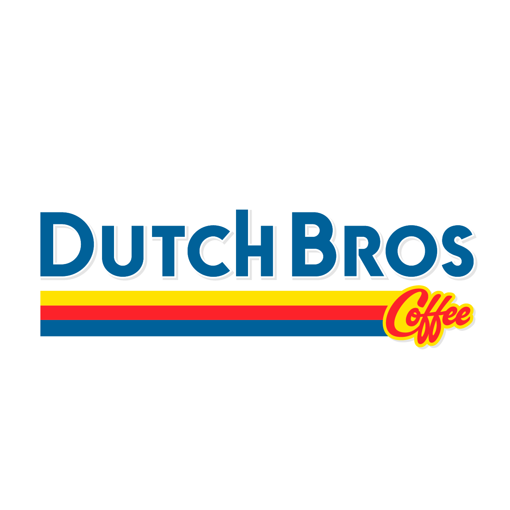

Not just one or two, it’s practically all of them.
Then again, why am I out right now? These food-delivery robots all seem to be on a mission, despite food services not opening for another two hours. I, however, am not. Sitting in a Dutch Bros with my laptop and a severe case of bedhead, I doubt I look completely sane to the kind barista who made my sugar n’ spice oat milk latte.
I just know that as soon as I got up, I made eye contact with my roommate who was clearly still awake from the night before. In a senseless moment of sleep deprivation from both of us, we broke down laughing as we simultaneously wished the other sweet dreams and a good morning.
This is the reality of finals week, we’re all just doing our best.
Should I be working on my finals right now instead of putting my tired thoughts into a word document that might get forgotten anyway? You betcha. But here I am, nonetheless, pushing away the thoughts of deadlines and procrastination.
So: let’s forget about school for a second and have some fun.
Ever heard of the airport game? It’s something my family uses to pass the time when we inevitably arrive at the airport four hours earlier than needed. It’s a tradition! To play the airport game, you pick a person that you see and make up an entire life story for them. This can include where they’re coming from, where they’re going, and the thoughts that run through their head in-between.
I introduce you to: The Airport Game, Dutch Bros Version.
Our first victim: Josie the barista.
Is that her actual name? Probably not even close. But that’s the fun of the game. When I walked out of the darkness into the light cast on the sidewalk by the store’s sign, Josie was outside unstacking chairs from tables, in a winter jacket that practically swallowed her whole.
“I'll be inside in just a minute!” She called out to me, clearly her first customer of the day. I assured her that there was no rush. After I put in my order with her, my mind began to wander.
I bet she has an aging golden lab waiting for her at home, with a name like Butter. This dog is the light of her world, and on those unfortunate nights when she is put on the closing shift, she locks those doors right at 11 p.m. and wipes down the counters with the speed of a power washer on cocaine, just to get home to her baby. Each extra minute with that pup counts because it’s unknown how many they have left together. No veterinarian visit is complete without days of preceding anxiety about any potential news that could cut their time together short. So far, Butter has a clean bill of health. But her 13th birthday is creeping up on them both like a clown in a haunted corn maze. I hope that Butter gets the long, happy, and healthy life she deserves.
I overheard Josie discussing with another customer the importance of Christmas traditions to her. I bet that these traditions were formed as a family ritual by the time she was five and brought her the excitement and stability every child deserves. A mere four years later, these traditions were ripped away from her young hands by the instability of an unprecedented divorce. With Christmas Eve at Dad’s house and being shuttled back to Mom’s first thing in the morning, nine-year-old Josie didn’t have the luxury of running down the stairs on Christmas morning to find a plethora of presents under the family tree. Instead, her new Christmas mornings consisted of packing up her life for the second time that week and jumping in Dad’s new sports car for the 20-minute drive back to Mom’s.
When she would arrive at her second home, her stepsiblings would have already torn through half of the presents under the tree, and mom would be reading her new books on the couch, not to be interrupted. With her new family, (even though it just consists of Butter so far), Josie is sure to emphasize the importance of tradition and stability around the holidays, so she can break the cycle of unhappiness that she was shoved into as a child.
Damn, Josie has really been thrown into a lot of challenges in life. But things are looking up, as she just found out this morning that she got accepted into UC Davis's pre-vet program for summer term. She’s preparing to pack up her life once again, but this time it’s of her own volition.

Good luck Josie! We all believe in you.
There it is folks, the airport game. I suggest you give it a try sometime! You never know what you can learn about the people around you.